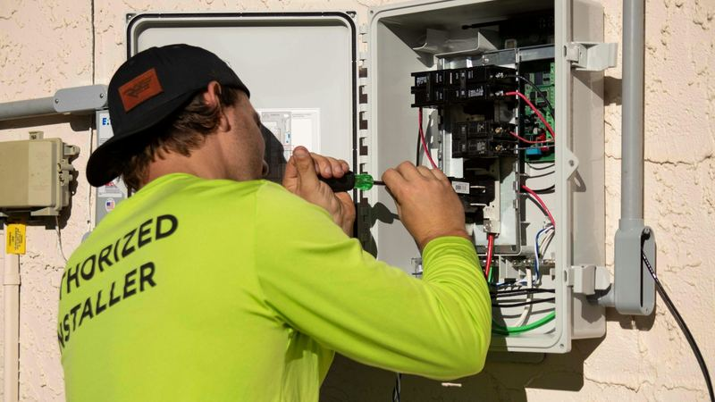
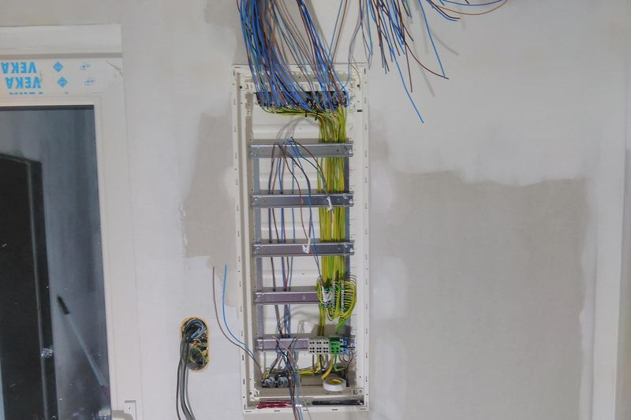
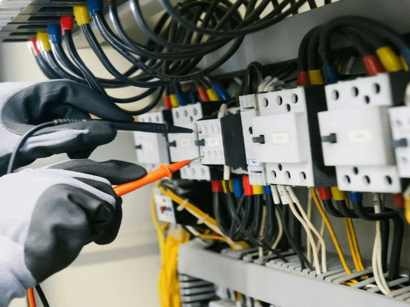
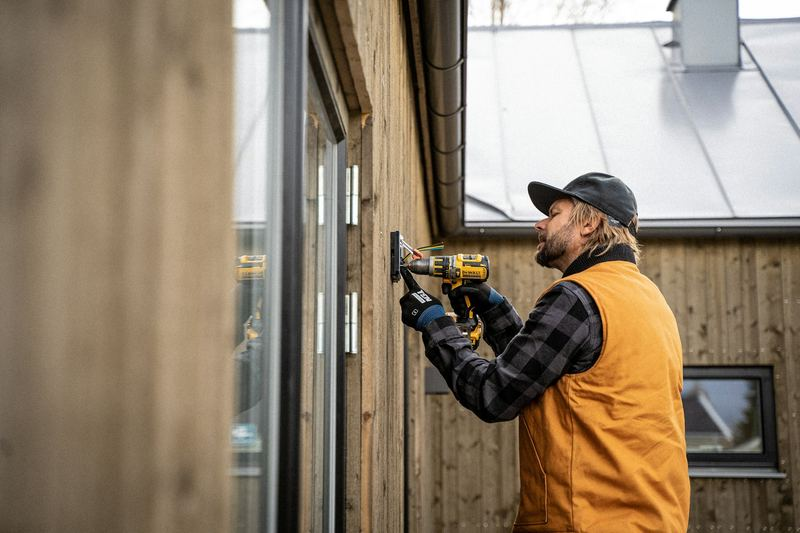
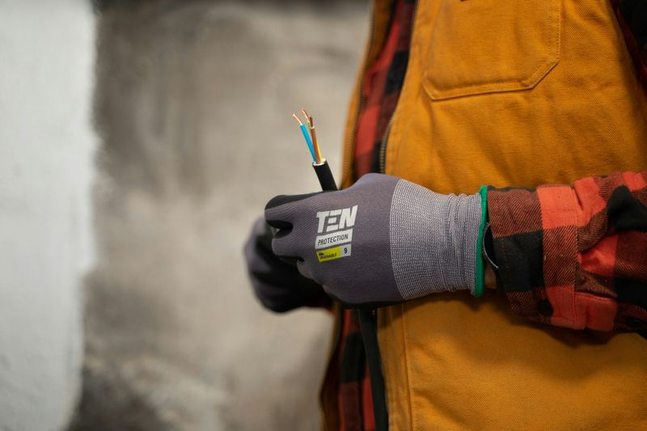

Nové elektroinstalace
Novostavby a rekonstrukce bytů i domů, rozvaděče a okruhy.
Ladislav Novický. Nové elektroinstalace, rekonstrukce a opravy, kamerové systémy a hromosvody. Cenovou nabídku Vám připravím zdarma.

Vyberte, kdy se dům nebo byt stavěl, a řeknu Vám, na co si dát pozor.
V tomhle období se hodně používaly hliníkové rozvody. Hliník časem křehne a spoje se uvolňují, což je hlavní riziko.
Doporučuji revizi a výměnu hliníku za měď.
Chci nabídku zdarmaRychle se domluvíme, přijedu v dohodnutém termínu.

Novostavby a rekonstrukce bytů i domů, rozvaděče a okruhy.

Výměna starých rozvodů, jističe, chrániče, zásuvky.

Kamery k domu, firmě nebo chatě, včetně zapojení.

Nové hromosvody i opravy stávajících.
„Pan Novický je slušný člověk, rychle komunikuje, ochotný. Kvalitně odvedená práce.“
zákaznice na Firmy.cz
„Vše proběhlo dle dohody, bez komplikací a rychle v dohodnutém termínu.“
zákazník na Firmy.cz
„Rychlé jednání, skvělá komunikace.“
zákaznice na Firmy.cz